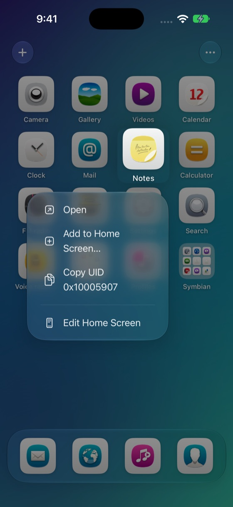
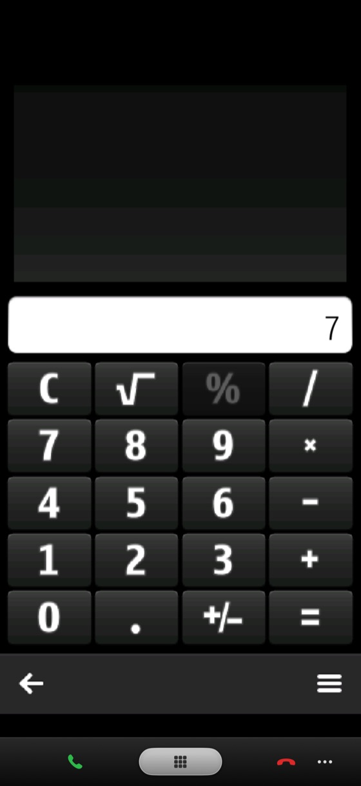
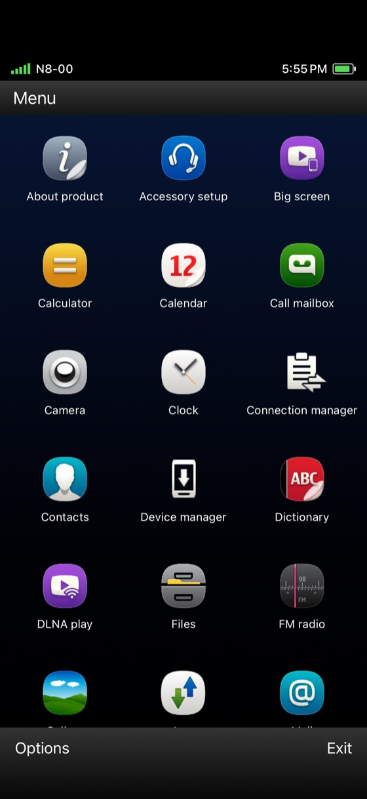

What it does
Built on the EKA2L1 Symbian emulator, with a front end made for the iPhone.
iPhone-style home screen
Pages of real Symbian icons, a dock, folders, long-press actions and jiggle mode.
Or the full Symbian look
Switch to a Symbian^3 Menu with its status bar and Options / Exit softkeys.
The N8's Menu key
The silver key from the N8's body sits under every app. Call keys appear in calling apps.
Install with +
Pick a .sis or .sisx package and it installs onto the phone, icon and all.
Your photos and music
Your newest photos show up in the N8's own Gallery; songs on the iPhone are copied for the Music player.
Shortcuts
Add any Symbian app to the iPhone Home Screen, run it from Shortcuts, or ask Siri.
Download
Builds are published on GitHub Releases and update here automatically.
AltStore / SideStore source
Add the source once and get every new build in the store app.
Add to AltStore Add to SideStoreInstall
- Install the IPA with AltStore, SideStore or Sideloadly — or add the source above.
- For full speed, enable JIT for SymbianBoard with SideStore or StikDebug. Without JIT it still runs, more slowly.
- Open SymbianBoard and install your device's firmware from its downloaded .zip.
- Tap + to add Symbian apps (.sis / .sisx), then open them from the home screen.
Screenshots
Nokia N8 firmware, iPhone 18 Pro simulator.



Status
Early. Tested in the iOS simulator; real iPhones next.
| Area | State | Notes |
|---|---|---|
| Home screens, folders, jiggle mode | Works | iPhone and Symbian styles |
| Calculator, Files, Notes | Works | Apps resume instantly from the home screen |
| Gallery with iPhone photos | Works | Grid and thumbnails; opening one photo still crashes |
| Music player | Not yet | Quits on launch; fix in progress |
| Real iPhone hardware | Untested | Feedback welcome in Issues |